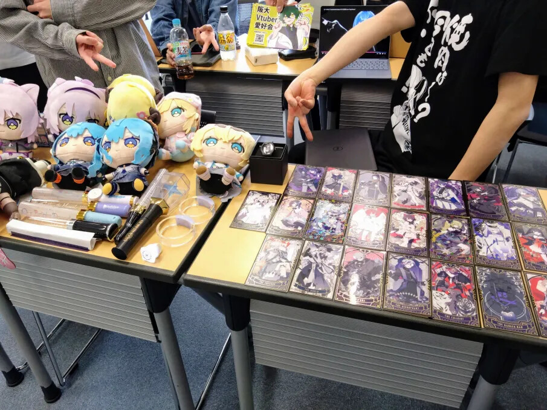
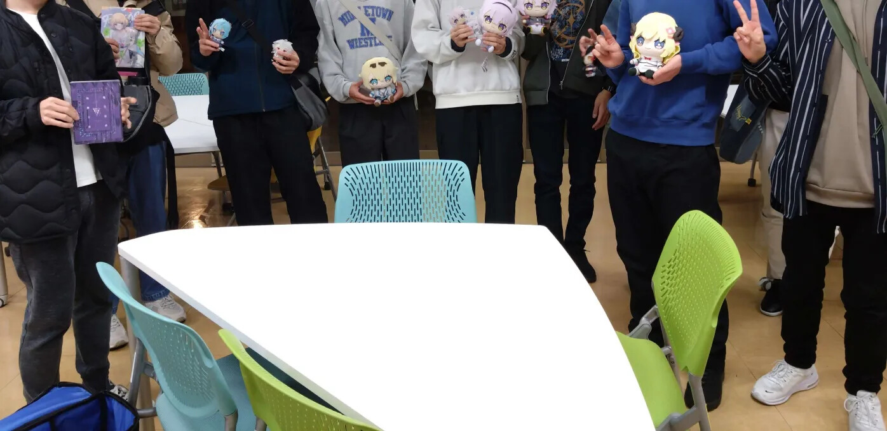
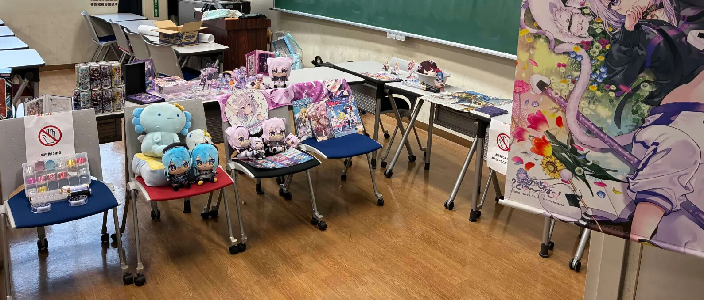
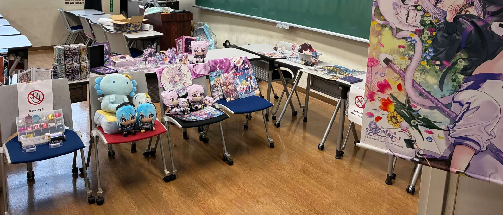
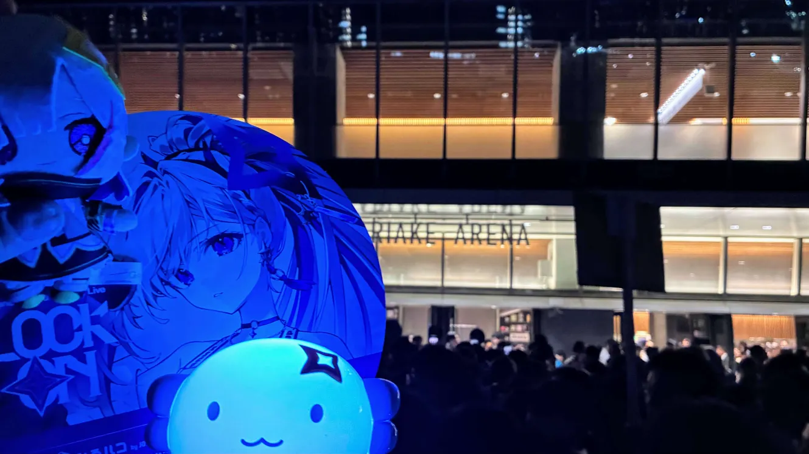
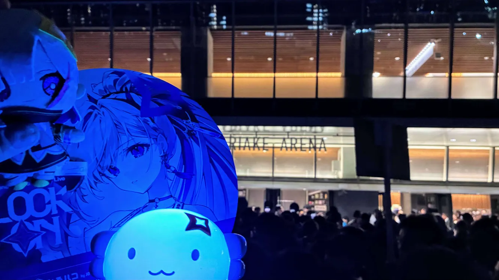

イベント
新歓
新入生向けの歓迎イベントを春に開催しています。
気軽に参加できる雰囲気で、Vtuber好きな仲間との出会いの場となっています。


学祭参加
大阪大学の大学祭に出展し、Vtuberの魅力を発信しています。
展示やイベント企画を通じて、多くの人とVtuberの好きなポイントを共有しています。
 

交流会(BBQなど)
定期的にオフラインでの交流会を開催し、BBQなどを楽しみながら親睦を深めています。
オンラインとは違った形で、メンバー同士の絆を強める良い機会になっています。


Vtuber関連のライブ/イベント
メンバーで一緒にVtuberのライブやイベントに参加することもあります。
一緒に参戦することで推し活がより充実したものになります！
 
